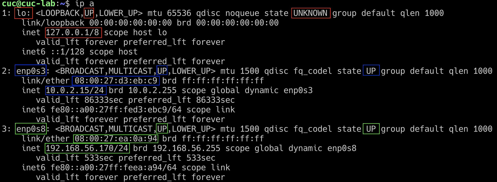
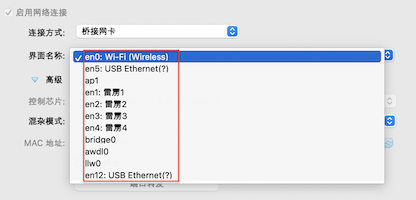
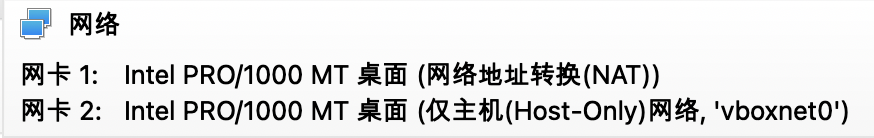
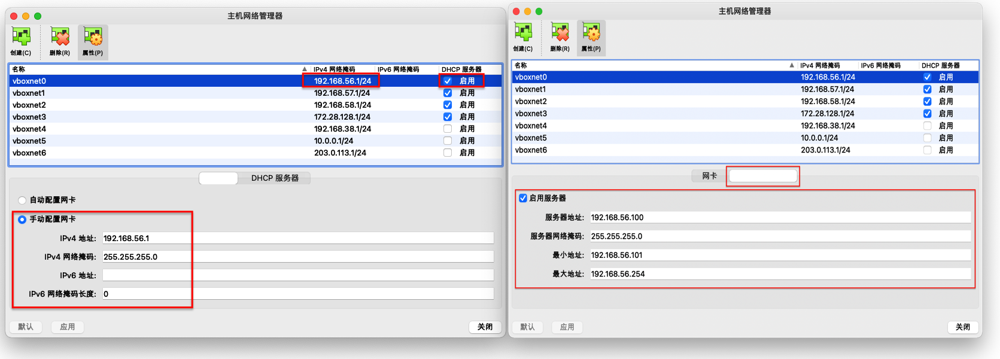
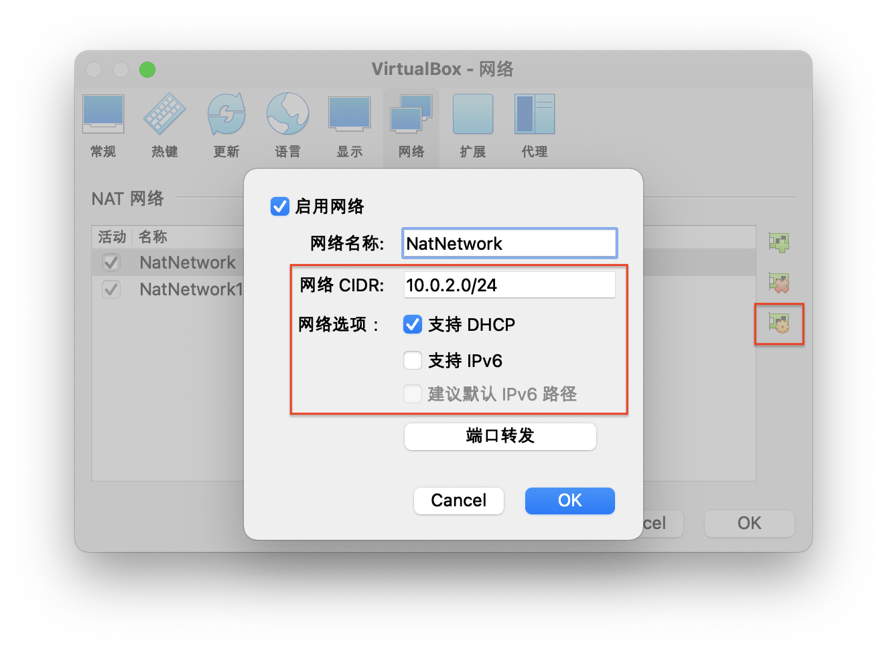
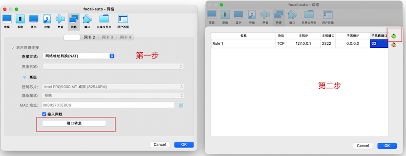

markdown 格式纯文本commit 到独立分支并通过 Pull Request 分别提交每一次作业
| 接口名称 | 网卡类型 | 网卡标识 | IP 地址/子网掩码 | MAC 地址 | 物理层正常可用状态 |
|---|---|---|---|---|---|
| 回环接口 | 虚拟网卡 | lo | 127.0.0.1/8 | 00:00:00:00:00:00 | UNKNOWN |
| 以太网卡 | 物理网卡 | enp0s3 | 10.0.2.15/24 | 08:00:27:d3:eb:c9 | UP |
| 以太网卡 | 物理网卡 | enp0s8 | 192.168.56.170/24 | 08:00:27:ea:0a:94 | UP |
Host OS）视角
Guest OS）视角
ip a 输出结果里的 enp0s3 和 enp0s8Host OS）视角
Guest OS）视角
ip a 输出结果里的 lo
10.0.2.15/24


端口转发 后，就可以 ssh cuc@127.0.0.1 -p 2222 登录 Linux
2222 端口已经被占用，请更换为其他可用端口号（建议 1024 以上）NAT 或 NAT 网络 创建的虚拟网卡对应的虚拟机内地址不能在宿主机上直接访问到⚠️ 仅适用于基于 subiquity 的 Ubuntu 安装镜像 ⚠️
/var/log/installer/autoinstall-user-data 对照 Ubuntu 20.04 + Autoinstall + VirtualBox 中提供的示例配置文件 酌情修改
meta-data 文件必不可少，但可以是空文件Ubuntu 64位系统 的虚拟机配置user-data 和 meta-data 的 ISO 镜像文件，假设命名为 focal-init.isofocal-init.isoyes 并按下回车键，剩下的就交给「无人值守安装」程序自动完成系统安装和重启进入系统可用状态了Continue with autoinstall? (yes|no)
⚠️ 仅限 Ubuntu 18.04 和 16.04 ，不适用于 Ubuntu 20.04 及后续更新版本 ⚠️
# 根据实际情况，自行替换其中的参数
# 在当前用户目录下创建一个用于挂载iso镜像文件的目录
mkdir loopdir
# 挂载iso镜像文件到该目录
mount -o loop ubuntu-16.04.1-server-amd64.iso loopdir
# 创建一个工作目录用于克隆光盘内容
mkdir cd
# 同步光盘内容到目标工作目录
# 一定要注意loopdir后的这个/，cd后面不能有/
rsync -av loopdir/ cd
# 卸载iso镜像
umount loopdir
# 进入目标工作目录
cd cd/
# 编辑Ubuntu安装引导界面增加一个新菜单项入口
vim isolinux/txt.cfg添加以下内容到该文件后强制保存退出
label autoinstall
menu label ^Auto Install Ubuntu Server
kernel /install/vmlinuz
append file=/cdrom/preseed/ubuntu-server-autoinstall.seed debian-installer/locale=en_US console-setup/layoutcode=us keyboard-configuration/layoutcode=us console-setup/ask_detect=false localechooser/translation/warn-light=true localechooser/translation/warn-severe=true initrd=/install/initrd.gz root=/dev/ram rw quiet~/cd/preseed/ubuntu-server-autoinstall.seedtimeout 10（可选，否则需要手动按下ENTER启动安装界面）# 切换到 root 用户身份
sudo su -
# 重新生成md5sum.txt
cd "$HOME/cd" && find . -type f -print0 | xargs -0 md5sum > md5sum.txt
# 封闭改动后的目录到.iso
IMAGE=custom.iso
BUILD="$HOME/cd/"
apt update && apt install -y genisoimage
genisoimage -r -V "Custom Ubuntu Install CD" \
-cache-inodes \
-J -l -b isolinux/isolinux.bin \
-c isolinux/boot.cat -no-emul-boot \
-boot-load-size 4 -boot-info-table \
-o $IMAGE $BUILD
# 如果目标磁盘之前有数据，则在安装过程中会在分区检测环节出现人机交互对话框需要人工选择一个我修改定制好的ubuntu-server-autoinstall.seed，请自行和官方示例文件进行比对，自行思考理解和掌握：